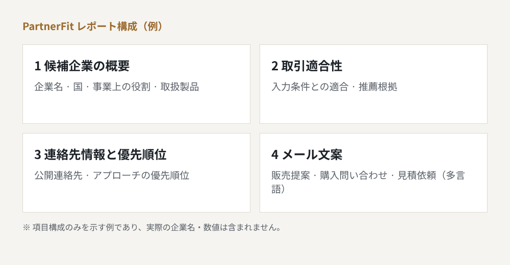

海外の取引パートナー探索を、
1枚のレポートで。
企業・製品情報を入力すると、AIが世界中のバイヤーとサプライヤーの候補を探索し、適合性分析レポートとカスタマイズしたメール文案まで自動で作成します。
PartnerFitはどのようなサービスですか？
PartnerFitは、企業・製品情報をもとにAIが海外のバイヤーとサプライヤーの候補を探索して推薦し、分析レポートとカスタマイズしたメール文案まで自動で作成するサービスです。
特定の国や品目にとらわれず、世界中を対象に販売先と供給先を同時に探索します。 顧客企業のタイプ・製品情報・取引条件を総合的に分析し、現在の事業方式に合うパートナーだけを絞り込みます。
参考（根拠・出典）：公的機関による有料の海外バイヤー発掘代行の例として、KOTRAの「輸出24（Export24）」は潜在バイヤーの発掘を1社あたり15万ウォン（VAT別）としています。一方、PartnerFitは無料です。 出典：KOTRA 輸出24 グローバル代行（海外市場調査）サービス案内（2024年11月約款適用基準）
海外の販売先を広げたい企業
製造企業・ブランド企業・貿易企業が、海外の輸入企業・流通企業・産業需要企業を探すとき。
海外の供給先を確保したい企業
原副資材・部品・完成品の製造企業やOEM・ODMの供給先を海外で探すとき。
共通の悩み：多言語に散らばった企業情報を集め、候補を比較・選別し、最初の連絡を準備するのに 時間と人手がかかります。同じ製品でも、企業のタイプや事業方式によって合う相手は異なります。
どのように動作しますか？入力からメール文案まで5ステップ
PartnerFitの特長は何ですか？
企業の事業方式 × 製品特性 × 取引条件
この3つを合わせて反映し、同じ製品でも企業ごとに異なる適切な相手を探します。
バイヤーとサプライヤー、異なる基準
バイヤーは取扱製品と流通・調達方法を、サプライヤーは供給能力・仕様・数量・納期を中心に評価します。
1つの企業情報で双方向に探索
同じ企業・製品情報を活用して、バイヤーとサプライヤーを同時に探索できます。
探索からメール文案まで連続処理
多言語での情報探索、候補の比較、レポート、メール文案の作成を1つの流れでつなぎます。
レポートはこのように構成されます
以下はレポートの項目構成を示す例です。実際の企業名や数値は含まれておらず、結果は入力された製品・市場条件によって異なります。

候補企業の概要
企業名、国、事業上の役割、取扱製品
取引適合性
入力した製品・条件との適合の有無と推薦根拠
連絡先情報と優先順位
連絡可能な公開情報とアプローチの優先順位
メール文案
販売提案・購入問い合わせ・見積依頼用の多言語文案
よくある質問
PartnerFitは無料ですか？
はい。PartnerFitは無料でご利用いただけます。
PartnerFitとは何ですか？
PartnerFitは、企業・製品情報をもとにAIが海外のバイヤーとサプライヤーの候補を探索して推薦し、分析レポートとカスタマイズしたメール文案まで自動で作成するサービスです。
バイヤー発掘とサプライヤー発掘は何が違いますか？
バイヤー発掘は、製品や供給条件に合う輸入企業・流通企業・ブランド企業・産業需要企業を探し、サプライヤー発掘は、購買条件に合う製造企業・原副資材および部品の供給企業・OEM・ODM企業を探します。評価基準も異なり、バイヤーは取扱製品と流通・調達方法を、サプライヤーは供給能力・仕様・数量・納期を中心に見ます。
どのような情報を入力する必要がありますか？
企業タイプ、事業モデル、製造・供給能力、販売または購入する製品、仕様・価格帯・数量・認証、希望市場と取引条件を入力します。
成果物として何を受け取れますか？
候補企業の概要、取扱製品、事業上の役割、取引適合性、推薦根拠、連絡先情報と優先順位をまとめたレポートと、販売提案・購入問い合わせ・見積依頼用の多言語メール文案を受け取れます。
特定の国や品目にしか使えませんか？
いいえ。特定の国や品目に限定せず、販売先と供給先の探索に対応しています。